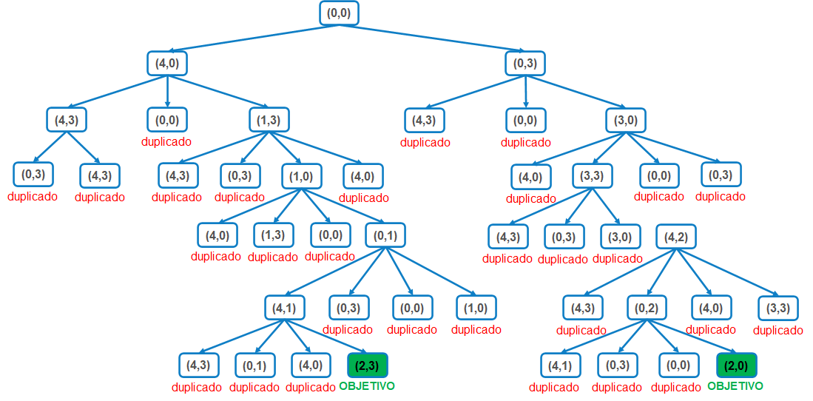
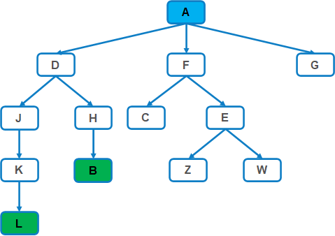
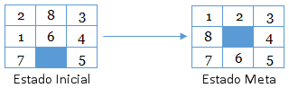

|
Se tienen dos jarras vacías. Una tiene 4 litros de capacidad y otra tiene 3 litros de capacidad.
Ninguna de las jarras tiene marcas de medición y no hay otro dispositivo de medida.
Hay un grifo para llenar las jarras. |
Llenar grande.
Llenar pequeña.
Vaciar grande.
Vaciar pequeña.
Traspasar grande pequeña.
Traspasar pequeña grande.
Suponer que cada vez que se genera un nodo, se elimina si en ese momento está en el árbol de búsqueda, es decir, si se detecta un ciclo.

Lista abierta = LA Lista cerrada = LC
Iteración 1: LA = (0,0)
Iteración 2: LC = (0,0) LA = (4,0) (0,3)
Iteración 3: LC = (0,0) (4,0) LA = (0,3) (4,3) (0,0) (1,3)
Iteración 4: LC = (0,0) (4,0) (0,3) LA = (4,3) (0,0) (1,3) (4,3) (0,0) (3,0)
Iteración 5: LC = (0,0) (4,0) (0,3) (4,3) LA = (0,0) (1,3) (4,3) (0,0) (3,0) (0,3) (4,3)
Iteración 6: LC = (0,0) (4,0) (0,3) (4,3) (1,3) LA = (4,3) (0,0) (3,0) (0,3) (4,3) (4,3) (0,3) (1,0) (4,0)
... Iteración n ...
Iteración xx: LC = (0,0) (4,0) (0,3) (4,3) (1,3) (3,0) (1,0) (3,3) (0,1) (4,2) (4,1) LA = (0,3) (0,0) (1,0) (4,3) (0,2) (4,0) (3,3) (4,3) (0,1) (4,0) (2,3)
Optimalidad: el algoritmo garantiza que la solución devuelta es óptima, es decir, es una solución de coste mínimo entre el conjunto total de soluciones.
La solución es óptima, ya que la búsqueda en amplitud en problemas de costes uniforme es admisible. Nótese que anteriormente se ha dicho que la solución generada estaba en una profundidad de 6, que se igualaba al coste de la solución. Cualquier otra solución que se pudiera encontrar estaría en ese mismo nivel de profundidad (por tanto, con un mismo coste), o en un nivel de profundidad mayor (con un coste mayor).
No, pues con una profundidad máxima de 4, no se puede encontrar una solución, ya que el coste de la solución es 6 y, por tanto, la mínima profundidad a la que se encontraría la solución sería 6.
Si, pues con una profundidad máxima de 6 sí se encontraría la solución. Sin embargo, el algoritmo de búsqueda en profundidad no es admisible, por lo que no garantizaría que la solución encontrada fuese óptima, a pesar de que en este caso sabemos que sí lo sería.
Si, pues con una profundidad máxima de 8 también se encontraría una solución, que podría tener un coste de 6, 7 u 8. Nuevamente no se garantizaría que fuese óptima.
El algoritmo encontraría una solución en su tercera iteración, con una profundidad máxima de 8.
El algoritmo de búsqueda en profundidad iterativa es un algoritmo completo y óptimo cuando la profundidad máxima inicial es 1, y el incremento de profundidad en cada iteración es también 1, por lo que no estaría garantizado que la solución encontrada fuese óptima.
Ha excedido en un coste de 1 el óptimo.

Lista abierta = LA Lista cerrada = LC
Iteración 1: LA = A
Iteración 2: LC = A LA = D, F, G
Iteración 3: LC = A, D LA = F, G, J, H
Iteración 4: LC = A, D, F LA = G, J, H, C, E
Iteración 5: LC = A, D, F, G LA = J, H, C, E
Iteración 6: LC = A, D, F, G, J LA = H, C, E, K
Iteración 7: LC = A, D, F, G, J, H LA = C, E, K, B
Lista abierta = LA Camino Actual = CA
Iteración 1: LA = A
Iteración 2: CA = A LA = D, F, G
Iteración 3: CA = A, D LA = J, H, F, G
Iteración 4: CA = A, D, J LA = K, H, F, G
Iteración 5: CA = A, D, J, K LA = L, H, F, G
Lista abierta = LA Lista cerrada = LC
Iteración 1: LA = A
Iteración 2: LC = A LA = D, F, G
Iteración 3: LC = A, D LA = F, G, J, H
Iteración 4: LC = A, D, F LA = G, J, H, C, E
Iteración 5: LC = A, D, F, G LA = J, H, C, E
Iteración 6: LC = A, D, F, G, J LA = H, C, E, K
Iteración 7: LC = A, D, F, G, J, H LA = C, E, K, B

Función de evaluacion: f(s) = g(s) + h(s)
Heurística: el número de fichas mal colocadas.
El coste de cada movimiento es 1.
| LC = LA = (S1-4) | g(S1) = 0 h(S1) = 4 f(S1) = g(S1) + h(S1) = 4 |
| LC = (S1-4) LA = (S3-4) (S2-6) (S4-6) | g(S2) = 1 h(S2) = 5 f(S2) = g(S2) + h(S2) = 6 g(S3) = 1 h(S3) = 3 f(S3) = g(S3) + h(S3) = 4 g(S4) = 1 h(S4) = 5 f(S4) = g(S4) + h(S4) = 6 |
| LC = (S1-4) (S3-4) LA = (S5-5) (S6-5) (S2-6) (S4-6) (S7-6) | g(S5) = 2 h(S5) = 3 f(S5) = g(S5) + h(S5) = 5 g(S6) = 2 h(S6) = 3 f(S6) = g(S6) + h(S6) = 5 g(S7) = 2 h(S7) = 4 f(S7) = g(S7) + h(S7) = 6 |
| LC = (S1-4) (S3-4) (S5-5) LA = (S6-5) (S2-6) (S4-6) (S7-6) (S8-6) (S9-7) | g(S8) = 3 h(S8) = 3 f(S8) = g(S8) + h(S8) = 6 g(S9) = 3 h(S9) = 3 f(S9) = g(S9) + h(S9) = 7 |
| LC = (S1-4) (S3-4) (S5-5) (S6-5) LA = (S10-6) (S2-6) (S4-6) (S7-6) (S8-6) (S9-7) (S11-7) | g(S10) = 3 h(S10) = 2 f(S10) = g(S10) + h(S10) = 5 g(S11) = 3 h(S11) = 4 f(S11) = g(S11) + h(S11) = 7 |
| LC = (S1-4) (S3-4) (S5-5) (S6-5) (S10-6) LA = (S12-5) (S2-6) (S4-6) (S7-6) (S8-6) (S9-7) (S11-7) | g(S12) = 4 h(S12) = 1 f(S12) = g(S12) + h(S12) = 5 |
| LC = (S1-4) (S3-4) (S5-5) (S6-5) (S10-6) (S12-5) LA = (S13-5) (S2-6) (S4-6) (S7-6) (S8-6) (S9-7) (S11-7) (S14-7) | g(S13) = 5 h(S13) = 0 f(S13) = g(S13) + h(S13) = 5 g(S14) = 5 h(S14) = 2 f(S14) = g(S14) + h(S14) = 7 |
| LC = (S1-4) (S3-4) (S5-5) (S6-5) (S10-6) (S12-5) (S13-5) LA = (S2-6) (S4-6) (S7-6) (S8-6) (S9-7) (S11-7) (S14-7) | S13 = OBJETIVO |
Finalmente, nos encontramos con que el nodo de menor 𝑓(s) es meta, por lo que detenemos el algoritmo y recuperamos la solución subiendo por los punteros a los nodos padre.
Camino final: (S1) (S3) (S6) (S10) (S12) (S13)
Heurística: distancia en línea recta desde las ciudades a Bucarest.
| Arad | 366 | Pitesti | 100 |
| Oradea | 380 | Rimnicu Vicea | 193 |
| Craiova | 160 | Sibiu | 253 |
| Drobeta | 242 | Timisoara | 329 |
| Fagaras | 176 | Lugoj | 244 |
| Vaslui | 199 | Mehadia | 241 |
| Zerind | 374 | Bucarest | 0 |
Función de evaluación: f(s) = h(s)
| LC = LA = (Arad-366) | h(Arad) = 366 f(Arad) = h(Arad) = 366 |
| LC = (Arad) LA = (Sibiu-253) (Timisoara-329) (Zerind-374) | h(Sibiu) = 253 f(Sibiu) = h(Sibiu) = 253 h(Timisoara) = 329 f(Timisoara) = h(Timisoara) = 329 h(Zerind) = 374 f(Zerind) = h(Zerind) = 374 |
| LC = (Arad) (Sibiu) LA = (Fagaras-176) (Rimnicu Vicea-193) (Timisoara-329) (Arad-366) (Zerind-374) (Oradea-380) | h(Oradea) = 380 f(Oradea) = h(Oradea) = 380 h(Rimnicu Vicea) = 193 f(Rimnicu Vicea) = h(Rimnicu Vicea) = 193 h(Fagaras) = 176 f(Fagaras) = h(Fagaras) = 176 h(Arad) = 366 f(Arad) = h(Arad) = 366 |
| LC = (Arad) (Sibiu) (Fagaras) LA = (Bucarest-0) (Rimnicu Vicea-193) (Sibiu-253) (Timisoara-329) (Arad-366) (Zerind-374) (Oradea-380) | h(Bucarest) = 0 f(Bucarest) = h(Bucarest) = 0 h(Sibiu) = 253 f(Sibiu) = h(Sibiu) = 253 |
| LC = (Arad) (Sibiu) (Fagaras) (Bucarest) LA = (Rimnicu Vicea-193) (Sibiu-253) (Timisoara-329) (Arad-366) (Zerind-374) (Oradea-380) | Bucarest = OBJETIVO CAMINO = (Arad) (Sibiu) (Fagaras) (Bucarest) |
Con el algoritmo voraz hemos encontrado un camino de Arad a Bucarest, ¡pero no el más corto!
Función de evaluación: f(s) = g(s) + h(s)
g(s) = coste de llegar desde el estado inicial hasta dicho estado.
| LC = LA = (Arad-366) | g(Arad) = 0 h(Arad) = 366 f(Arad) = 0 + 366 = 366 |
| LC = (Arad) LA = (Sibiu-393) (Timisoara-447) (Zerind-449) | g(Sibiu) = 140 h(Sibiu) = 253 f(Sibiu) = 140 + 253 = 393 g(Timisoara) = 118 h(Timisoara) = 329 f(Timisoara) = 118 + 329 = 447 g(Zerind) = 75 h(Zerind) = 374 f(Zerind) = 75 + 374 = 449 |
| LC = (Arad) (Sibiu) LA = (Rimnicu Vicea-413) (Fagaras-415) (Timisoara-447) (Zerind-449) (Arad-646) (Oradea-671) | g(Oradea) = 291 h(Oradea) = 380 f(Oradea) = 291 + 380 = 671 g(Rimnicu Vicea) = 220 h(Rimnicu Vicea) = 193 f(Rimnicu Vicea) = 220 + 193 = 413 g(Fagaras) = 239 h(Fagaras) = 176 f(Fagaras) = 239 + 176 = 415 g(Arad) = 280 h(Arad) = 366 f(Arad) = 280 + 366 = 646 |
| LC = (Arad) (Sibiu) (Rimnicu Vicea) LA = (Fagaras-415) (Pitesti-417) (Timisoara-447) (Zerind-449) (Craiova-526) (Sibiu-553) (Arad-646) (Oradea-671) | g(Pitesti) = 317 h(Pitesti) = 100 f(Pitesti) = 317 + 100 = 417 g(Craiova) = 366 h(Craiova) = 160 f(Craiova) = 366 + 160 = 526 g(Sibiu) = 300 h(Sibiu) = 253 f(Sibiu) = 300 + 253 = 553 |
| LC = (Arad) (Sibiu) (Rimnicu Vicea) (Fagaras) LA = (Pitesti-417) (Timisoara-447) (Zerind-449) (Bucarest-450) (Craiova-526) (Sibiu-553) (Sibiu-591) (Arad-646) (Oradea-671) | g(Bucarest) = 450 h(Bucarest) = 0 f(Bucarest) = 450 + 0 = 450 g(Sibiu) = 338 h(Sibiu) = 253 f(Sibiu) = 338 + 253 = 591 |
| LC = (Arad) (Sibiu) (Rimnicu Vicea) (Fagaras) (Pitesti) LA = (Bucarest-418) (Timisoara-447) (Zerind-449) (Bucarest-450) (Craiova-526) (Sibiu-553) (Sibiu-591) (Rimnicu Vicea-607) (Craiova-615) (Arad-646) (Oradea-671) | g(Bucarest) = 418 h(Bucarest) = 0 f(Bucarest) = 418 + 0 = 418 g(Craiova) = 455 h(Craiova) = 160 f(Craiova) = 455 + 160 = 615 g(Rimnicu Vicea) = 414 h(Rimnicu Vicea) = 193 f(Rimnicu Vicea) = 414 + 193 = 607 |
| LC = (Arad) (Sibiu) (Rimnicu Vicea) (Fagaras) (Pitesti) (Bucarest) LA = (Timisoara-447) (Zerind-449) (Bucarest-450) (Craiova-526) (Sibiu-553) (Sibiu-591 (Rimnicu Vicea-607) (Craiova-615) (Arad-646) (Oradea-671) | Bucarest = OBJETIVO CAMINO = (Arad) (Sibiu) (Rimnicu Vicea) (Pitesti) (Bucarest) |